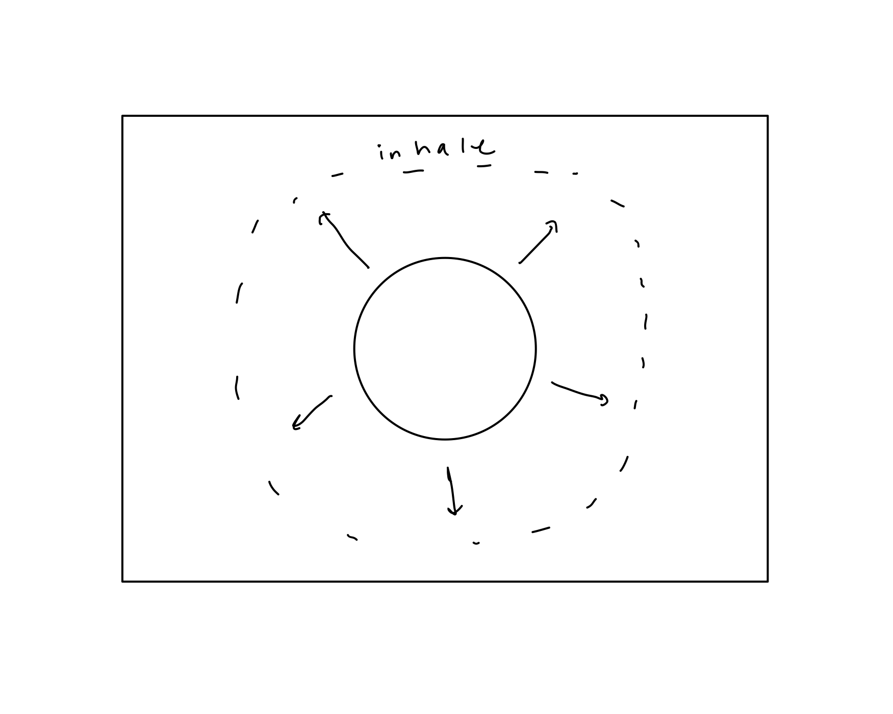
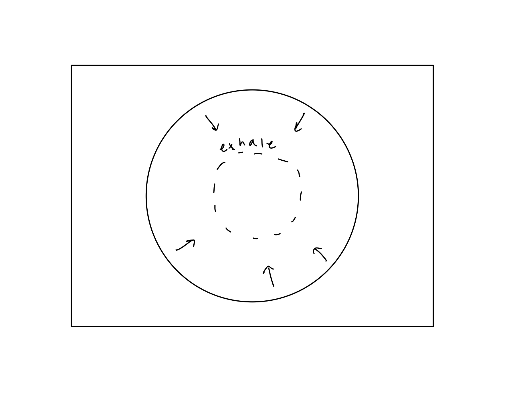

Exhale
As a project for Visual Thinking (Fall 2019), I created this simple site as a response to our prompt of creating a distributable, nondiscrete piece of art.
I noticed that mental health on college campuses is often neglected, so I wanted to design a website to target one facet of this complex issue. I decided to build a website with a breathing activity, which I saw as a potential solution to help reduce some of the stress students experience, and wanted to ensure that this resource was accessible and intuitive to use.
Timeline:
November - December 2019
Tools:
Adobe Illustrator, HTML/CSS, three.js
Team:
Reese Gyllenhammer
Sketch:
My initial thought was to create a circle expanded and contracted to the rhythm of a breath that looked like the picture above.
 
Website:
I used three.js - a JavaScript 3D library - to create 3D objects that were scaled using a sine function, in order to best replicate the breath. Check out the full project on github here.
Branding Materials:


These are two sticker or flyer designs that could be printed and distributed around UC Berkeley in order to spread awareness of this digital tool.